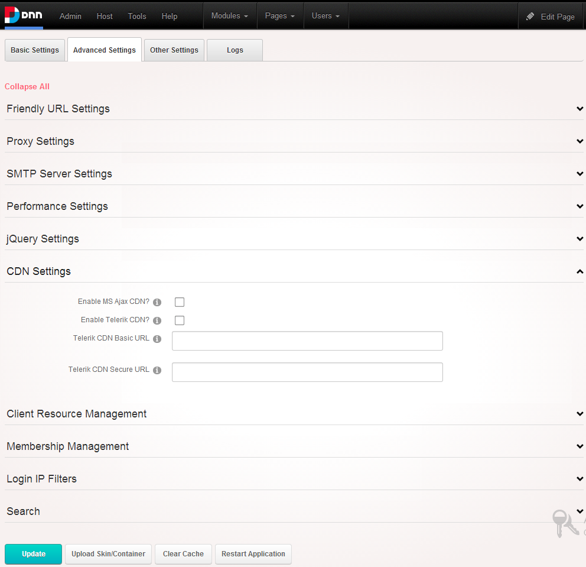

>
CDN Settings
How to configure the Host Settings for Content Distribution Network (CDN) Settings. CDN is used to speed up the load time of pages, since the URL of the JavaScript files is the same as many other websites you may have browsed the js files don’t need to be downloaded again as they are cached by your browser and hence the page loads faster.
- Navigate to Host >
 Host Settings.
Host Settings. - Select the Advanced Settings tab.
- Expand the CDN Settings section.
- Optional. At Enable Microsoft AJAX CDN, if you want to use js files from the Microsoft CDN. The URL used to retrieve AJAX libraries will now be similar to "http://ajax.microsoft.com/ajax/3.5/MicrosoftAjax.js". If you leave it unchecked the URL to the AJAX libraries will look similar to this "http://yourwebsite.com/Resources/Shared/scripts/MSAJAX/MicrosoftAjax.js"
- Optional. At Enable Telerik CDN, if you wish to use the libraries from the Telerik CDN.
- If you want to use your own CDN to deliver the Telerik js libraries you can specify the normal and secure URLs in the "Telerik CDN Basic URL" and "Telerik CDN Secure URL" text boxes.

-
Click the Update button.